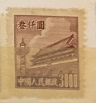
| SOURCE | TITLE| IMAGE MATCH | click to source page |
| www.ebay.com | China - North East China - 1950 Tiananmen - Gate of Heavenly ... | 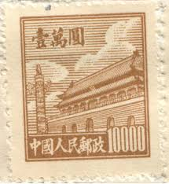 |
| www.ebay.com | Stamp PRC 1950 Gate of Heavenly Peace #23 MNH | eBay | 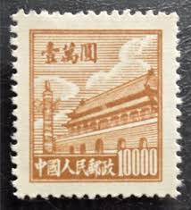 |
| www.kenmorestamp.com | Gate of Heavenly Peace - PRC #94 | 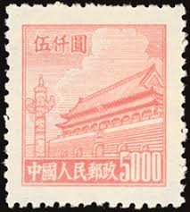 |
| www.hipstamp.com | People's Republic of China 1950 Sc 23 Gate of Heavenly ... |  |
| www.amazon.com | 1950 PRC RARE 1950 COMMUNIST CHINA GATE of HEAVENLY PEACE ... | 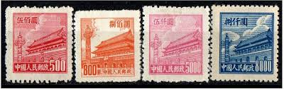 |
| www.ebay.com | China Stamps - 中国邮票-1950, R2 Scott 23第二次印刷天安门 ... | 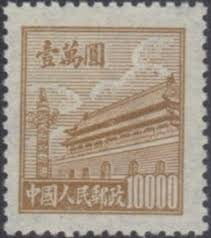 |
| www.kenmorestamp.com | Gate of Heavenly Peace - PRC #211 |  |
| www.xabusiness.com | R4 Scott 85-94 Regular Essur with Design of Tian An Men (4th ... | 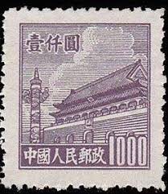 |
| findyourstampsvalue.com | NORTHEAST CHINA: Gate of Heavenly Peace - 中国东北: 东北贴用 ... | 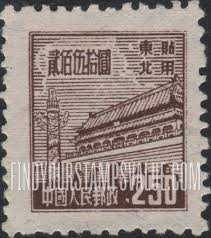 |
| www.ebay.com | 1950 china stamp tian an men 3000 Red | eBay |  |
| www.ourchinastory.com | China began issuing nationwide unified postage stamps ... |  |
| www.bidcurios.com | 1950 China 300 Yuan "Gate of Heavenly Peace" MNH Stamp ... | 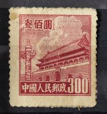 |
| worldstampsproject.org | China-Gate-of-Heavenly-Peace-stamp-1950-06 – World Stamps ... | 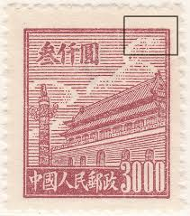 |
| www.xabusiness.com | R5 Scott 95-100 Regular Issue with Design of Tian An Men ... | 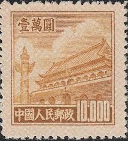 |
| jppstamps.fandom.com | China (People's Republic) 1950 Gate of Heavenly Peace (1st ... | 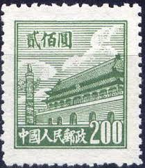 |
| www.facebook.com | Republic of China five-dollar postage stamp | 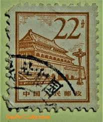 |
| www.hipstamp.com | People's Republic of China 1951 Sc 93 Gate of Heavenly Peace ... | 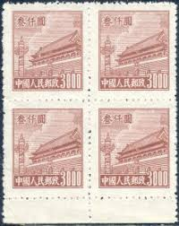 |
| www.etsy.com | 1949 China Stamp - Northeast Liberation Area, Lantern Over ... | 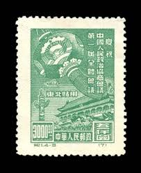 |
| www.shutterstock.com | 3+ Thousand Beijing Stamp Royalty-Free Images, Stock Photos ... | 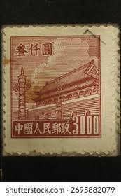 |
| www.alamy.com | Stamp texture square hi-res stock photography and images - Alamy | 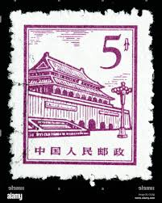 |
| worldstampsproject.org | People's Republic of China – varieties of postage stamps ... | 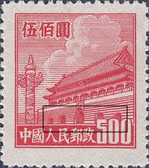 |
| colnect.com | Stamp: Gate of Heavenly Peace (China, People's Republic(Gate ... | 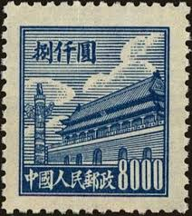 |
| www.freestampcatalogue.com | Stamps from China People's Republic - Freestampcatalogue.com ... | 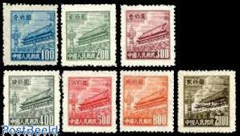 |
| www.istockphoto.com | 10+ Postage Stamp Mao Tse Tung Stock Photos, Pictures ... | 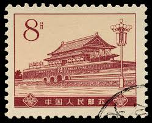 |
| en.numista.com | 500 Yuan - Republic of China – Numista | 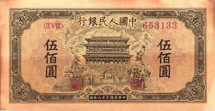 |
| findyourstampsvalue.com | NORTHEAST CHINA: Gate of Heavenly Peace - 中国东北: 东北贴用 ... | 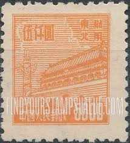 |
| www.dreamstime.com | Chinese Postage Stamp Dedicated To the Liberation of ... | 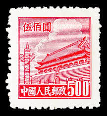 |
| www.ebay.com | China - MNH Block of 4 Stamps.........................A-1020 ... |  |
| cpi.chinapost.com.cn | 天安门图案普通邮票(第五版) - 中国集邮有限公司 | 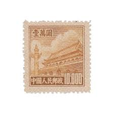 |
| www.cnpai.net | 真伪对比“中国假邮第一案”的邮票,到底多完美？-热点话题-炒邮网 ... | 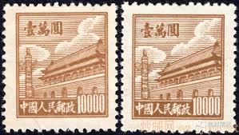 |
| www.us-china-stamps.com | Shop | 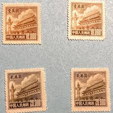 |
| www.alamy.com | Postage stamp from the People's Republic of China (Mainland ... | 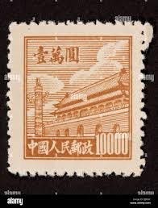 |
| en.numista.com | 50 000 Yuan - People's Republic of China – Numista | 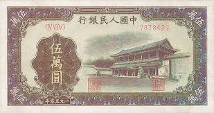 |
| villers-collections.fr | Timbres de Chine bloc de quatre T.P, année 1951 Réf 924 ... | 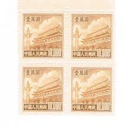 |
| www.linns.com | Rare unissued PRC 1956 Gate of Heavenly Peace with sun rays ... |  |
| www.ebid.net | China 1950 Gate of Heavenly Peace 3000 Used Stamp on eBid ... | 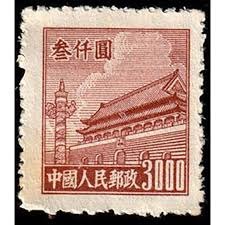 |
| cpi.chinapost.com.cn | 天安门图案普通邮票(第三版) - 中国集邮有限公司 | 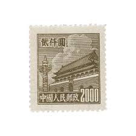 |
| www.finn.no | Kinesiske merker | FINN-torget | 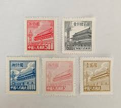 |
| picclick.co.uk | RARE , CHINA Stamp 20.000 Gate Of Heavenly Peace 1950, £1.00 ... | 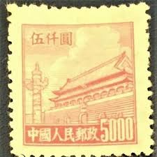 |
| prcchinastamps.com | Products – PRCStamps |  |
| www.hipstamp.com | 1950 China Stamp: Sc#21-3, Gate of China MNH Complete SET ... | 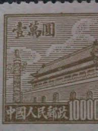 |
| m.airmb.com | 浅析普2 天安门图案（第二版）普通邮票收藏价值-爱藏网 | 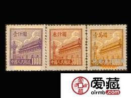 |
| www.instagram.com | In 1949, with the founding of the People's Republic of China ... | 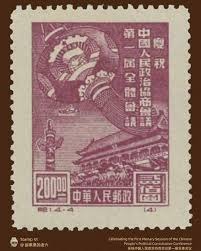 |
| worldstampsproject.org | China-Gate-of-Heavenly-Peace-stamp-1950-02 – World Stamps ... | 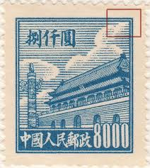 |
| www.xabusiness.com | S15 Scott 290-294 Scenic Spots of Beijing - China Stamps | 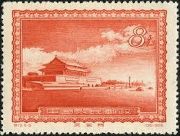 |
| www.ebay.com | PR China 1950 First Issue $10000 MNG A19P58F518 | eBay |  |
| allnationsstampandcoin.com | China Stamps | All Nations Stamp and Coin |  |
| www.kenmorestamp.com | Gate of Heavenly Peace - PRC #585 | 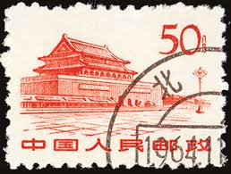 |
| primaltrek.com | Chinese Paper Money | 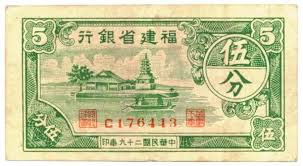 |
| jppstamps.fandom.com | China (People's Republic) 1950 Gate of Heavenly Peace (2nd ... | 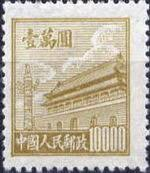 |
| postalmuseum.si.edu | Commerce: The Chinese Bureau of Engraving and Printing ... | 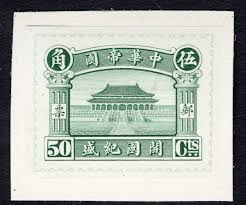 |
| katzauction.com | China 10 Yuan 1949 | Katz Auction | 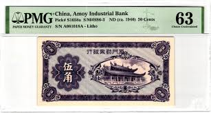 |
| www.reddit.com | Any info on this old fake chinese miney from the republic of ... | 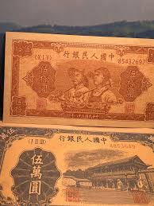 |
| en.numista.com | 1 Jiao / 10 Cents (Bank of China) - Republic of China – Numista | 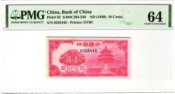 |
| commons.wikimedia.org | File:50,000 Yuan (人民幣) - People's Bank of China (1951 ... | 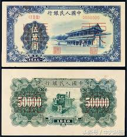 |
| www.jaysmith.com | Jay Smith & Associates: World: Asia: Manchukuo Stamps | 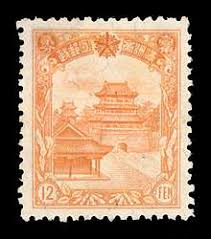 |
| www.lastdodo.com | Stamps from China - People's Republic Stamp catalogue - LastDodo | 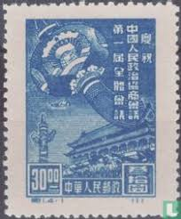 |
| www.spink.com | 1128 - People's Bank of China, 1st series renminbi, 1950 ... | 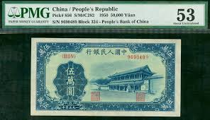 |
| www.postbeeld.com | Stamps from China People's Republic - PostBeeld - Online ... | |
| katzauction.com | China 1 Yuan 1956 PMG 66 EPQ Gem Uncirculated | Katz Auction |
_-_People's_Bank_of_China_(1951)_KKNews_02.jpg){kind=link}